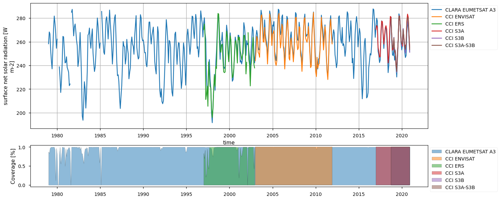
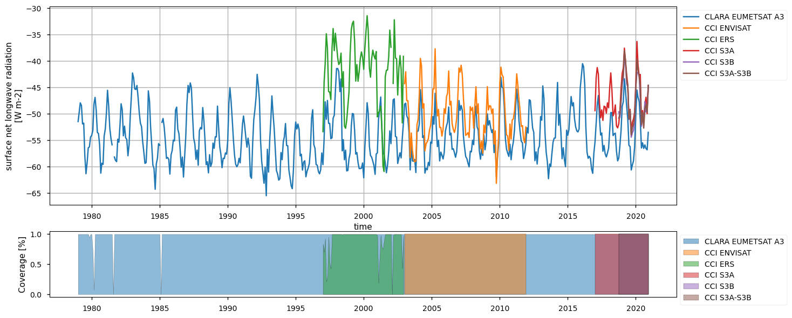
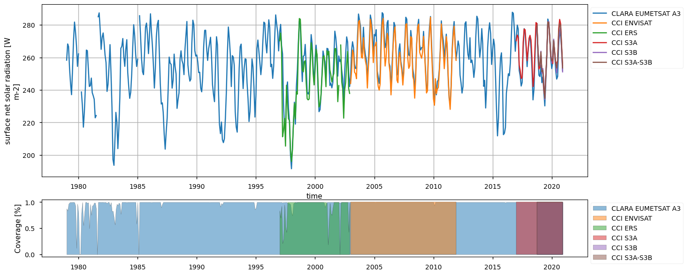
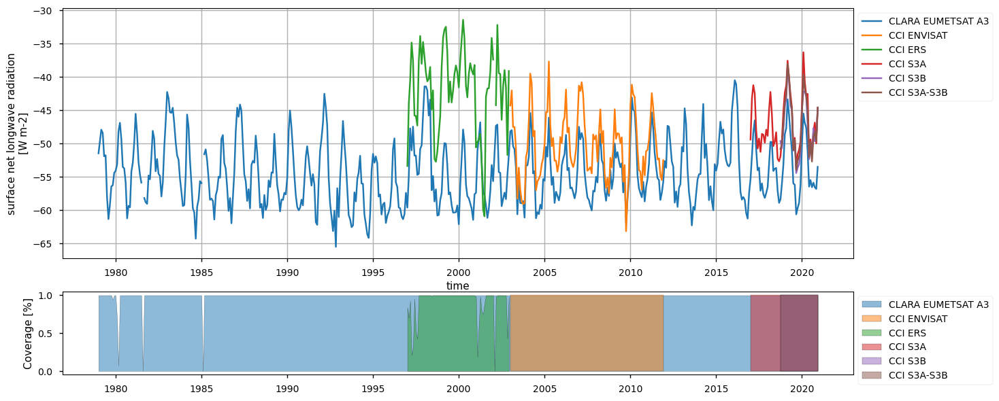
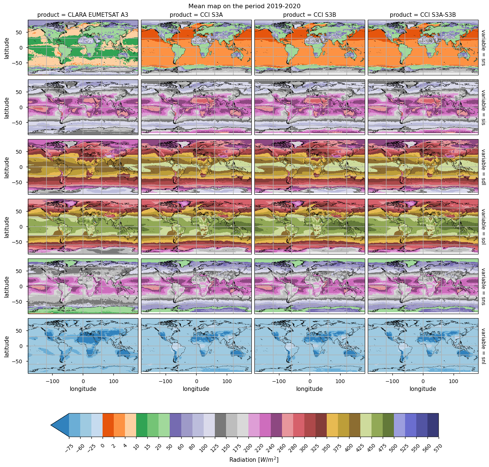
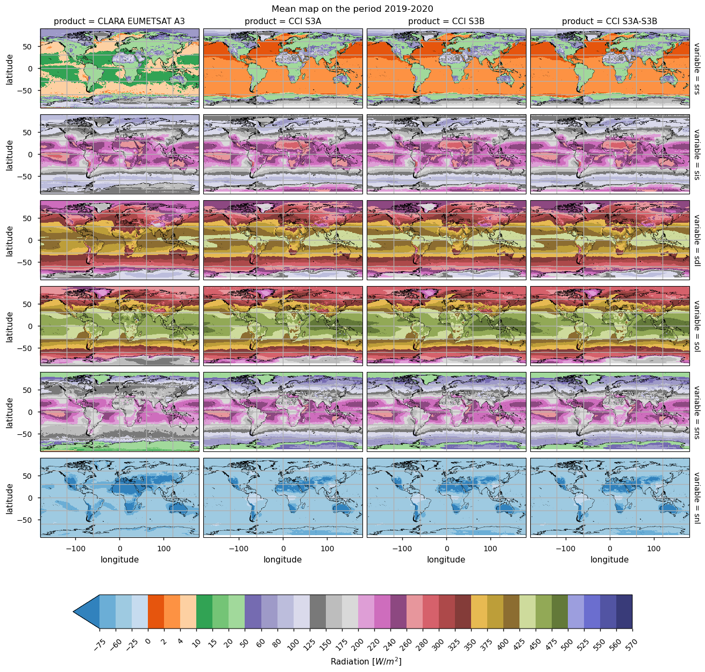

1.1.1. Satellite Surface Radiation Budget intercomparison for climate change monitoring#
Production date: 10-06-2025
Produced by: CNR-ISMAR, Andrea Storto, Vincenzo de Toma
🌍 Use case: Use surface radiation budget to monitor climate change#
❓ Quality assessment question(s)#
What is the climatology and temporal variability of SRB and its uncertainty? How consistent are the surface radiation budget products?
The Surface Radiation Budget (SRB) products allow quantifying the surface energy budget, the energy exchanges at the atmospheric lower boundary (with ocean, ice, and land), and their temporal and spatial variability, for use in several climate applications, such as, for instance: i) climate modeling and validation, where SRB data are essential for calibrating and validating general circulation models (GCMs) of the ocean and atmosphere. Accurate SRB measurements help improve model predictions of climate tendencies by ensuring that energy exchanges are correctly represented; ii) energy balance analysis, focusing on understanding the role of SRB on Earth’s energy balance, which influences global temperatures and climate dynamics. Significant variations in the SRB can indicate changes in climate forcings, such as increased greenhouse gases or variations in solar radiation, etc.; iii) surface temperature studies, where SRB data contribute to studying regional amplifications of climate variations; iv) research on other cycles, like for instance the hydrological cycle, for which SRB strongly influences the evaporation rate and, to a lesser extent, precipitation patterns. Their temporal coverage and spatial detail, however, vary significantly between the products. There exist offsets between the products, which tend to be significant for shortwave components, although they tend to cancel out in the net surface shortwave flux. Longwave fluxes are less consistent, in general, at low latitudes. In particular, biases of opposite sign (negative for CLARA products, positive for ESA and C3S products) and documented within the Product Validation and Intercomparison Reports, amplify the cross-product differences.
📢 Quality assessment statement#
These are the key outcomes of this assessment
The surface radiation budget (SRB) products capture the spatial and temporal variability of the radiative fluxes at the surface, for use in climate analyses, energy budget studies, and climate model assessment
The SRB products have different temporal coverage and spatial resolution, namely their combined use is not straightforward and it is recommended for advanced users only, or within selected periods
The consistency among the products concerning spatially averaged values is sufficient to capture the annual cycle of all the variables, both in the tropics and in the Nino 3.4 region. Moreover, there’s more agreement regarding the temporal variability for the net solar radiation across products than for the other variables investigated
Climatological maps and zonally averaged values indicate that the products suffer from poor consistency in some areas, e.g. longwave flux components (downwelling and outgoing) at low latitudes, and shortwave at high latitudes.
Using satellite data to estimate the surface radiation budget - comprising shortwave and longwave radiation at the interfaces between atmosphere and ocean, atmosphere and land, and atmosphere and ice - is often discontinuous and poses significant challenges for climate monitoring and model verification. These estimates can be influenced by various atmospheric conditions and instrument limitations, making their use complex and recommended only for expert users ([1]; [2]). Partial temporal (and spatial, to a lesser extent) sampling of the datasets hampers their easy utilization.
Fig. 1.1.1.1 Monthly Climatological Time Series of fluxes within the Tropical and Nino 3.4 region for all the datasets#
📋 Methodology#
We aim here to inter-compare the following catalogue entries from the Climate Data Store (CDS) by Copernicus:
ESA Cloud Climate Change Initiative (ESA Cloud_cci) data: Cloud_cci ATSR2-AATSR L3C/L3U CLD_PRODUCTS v3.0.
CLARA-A3: CM SAF cLoud, Albedo and surface RAdiation dataset from AVHRR data - Edition 3. Satellite Application Facility on Climate Monitoring (CLARA EUMETSAT A3)
Sentinel 3A and Sentinel 3B, and the combined product from the Rutherford Appleton Laboratory under the Copernicus Climate Change Service (C3S) programme.
In particular, this analysis takes into account the Surface Radiation Budget Essential Climate Variable (ECV), in terms of the following ECV products:
Surface Reflected Solar Radiation (SRS);
Surface Incoming Solar Radiation (SIS);
Surface Downwelling Longwave Radiation (SDL);
Surface Net Downward Shortwave Radiation (SNS);
Surface Outgoing Longwave Radiation (SOL).
Please note that not all catalogue entries provide the above ECV products. For example, SRS/SOL (Surface Reflected Solar / Surface Outgoing Longwave radiation) is not provided in CLARA EUMETSAT A3, we derived the SRS/SOL by subtracting SIS/SDL (Surface Incoming Solar / Surface Downwelling Longwave radiation) and SNS/SNL (Surface Net Solar / Surface Net Longwave radiation). Please see the Download and transform section for details.
1. Choose the data to use and setup code
3. Plot spatial weighted time series, time weighted means, spatial weighted zonal means
📈 Analysis and results#
Given the multi-panel nature of most of the figure in this assessment, please consider to open them in a separate tab on your browser.
1. Choose the data to use and setup code#
In this section, we import the required packages and set up the dataset names for further use in the following sections. Processing functions are also defined. The choice to use only the latest version of CLARA is intentional: previous versions are on the CDS for backwards compatibility reasons.
2. Download and Transform#
The code below will download the products.
3. Plot spatial weighted time series, time weighted means, spatial weighted zonal means#
Spatially-weighted time series#
Below, we calculate and plot spatially weighted means for the different surface radiation budget products. Please note that masks of available data may differ across the products. However, the spatial weighted means are calculated between 30°S and 30°N, so that mask inconsistencies have minimal effects. Additionally, quality mask (variable record_status) from the CLARA EUMETSAT A3 product has been used to mask all products’ data points in the attempt to make the comparison aware of data gaps - we also calculate the percentage of valid measurements according to this criterion in the region considered, referring to it with the generic term “coverage” in the following.
The timeseries above show that the different products do not fully overlap temporally, and thus they can be combined by expert users only. Moreover, there exist large offsets, likely linked to the different processing chains and sensors rather than to inter-annual variations, especially for the surface (outgoing and downwelling) longwave radiation. Products show a good consistency in representing the surface incoming solar radiation, although significant differences exist in the reflected solar radiation, likely due to different albedo definitions and diverse daily cycles implied in turn by different sensors. However, these differences are partly compensated between the downward and upward fluxes, and result in the net solar radiation exhibiting reasonably comparable timeseries.
The Nino3.4 region is specifically investigated. Assessing the Surface Radiation Budget (SRB) over the Niño3.4 region is important because it directly influences sea surface temperatures that drive El Niño events, which in turn impact global weather and climate patterns. Additionally, the area does not present any data gap (unlike high-latitude areas), thus representing an ideal region to fairly compare the SRB products. Therein, seasonal variations are less important than the inter-annual variations, which in turn respond to the El Nino-Southern Oscillation (ENSO) variability. Additionally, the region exhibits good observational coverage. Except for the reflected solar radiation (see later for details), all variables show reasonable consistency. Surface incoming solar radiation and longwave radiation fluxes are found in large consistency and differences fall mostly within the error bars (i.e. between 5 W/m2 and 10 W/m2) depending on variables as indicated in the product quality assurance document (https://confluence.ecmwf.int/pages/viewpage.action?pageId=384141061). These findings also emerge from the monthly climatology shown in the spatially-weighted mean annual cycles section below.
 



Spatially-weighted mean annual cycles#
The seasonal means below indicate a good consistency for solar radiation products (both reflected and incoming) across the products. Longwave radiation products have consistency within the products’ nominal accuracy, with CLARA systematically exhibiting, on average, about 10-15 W m-2 less than the other products concerning the downwelling longwave radiation; it is known, indeed, from the Validation Report (CM SAF Cloud, Albedo, Radiation data record, AVHRR-based, Edition 3 (CLARA-A3) Surface Radiation, doi:10.5676/EUM_SAF_CM/CLARA_AVHRR/V003) that CLARA surface downwelling radiation suffers from a negative bias of about -6 W m-2 compared to station-based observations, while ESA products (both longwave and shortwave radiative fluxes) are known to be positvely biased (ESA Cloud_cci Product Validation and Intercomparison Report (PVIR), , and SRB CCI-ICDR: Product Quality Assurance Document (PQAD), https://confluence.ecmwf.int/pages/viewpage.action?pageId=304239428). Results on the outgoing longwave radiations show different distributions of the datasets, with CLARA and ESA Envisat exhibiting respectively the smallest and the largest values, on average.
Text(0.5, 1.0, 'Monthly mean time series in the tropical domain (30°S - 30°N)')
Text(0.5, 1.0, 'Monthly mean time series in Nino 3.4 region')
Time-weighted means#
Below, we calculate and plot time-weighted means for the different surface radiation budget products. Please note that periods differ across the products as illustrated in the previous section.
 

Maps exhibit generally similar features, and are shown for different data periods with consistent coverage across products. The incoming shortwave radiation peaks at low latitudes; variations in its reflected counterpart depend on albedo values, which are very low in the open ocean and then increase for land, and snow and it is the highest over desertic regions. Values of reflected shortwave radiation over the open ocean seem too low in ESA and C3S products (less than 8 W m-2), while CLARA values (13-16 W m-2) are more aligned to the open ocean albedo of 0.06. Differences, however, tend to cancel in the net shortwave radiation, as pointed out above. The downwelling longwave radiation is also distributed geographically depending on the incoming solar radiation and cloudiness, and thus also peaks in the Tropical band. In contrast, the outgoing downwelling radiations rely on the surface temperature, and thus peak again in the Tropics, with the lowest values on ice-covered regions. However, the different products are poorly consistent in many areas. In CLARA, for instance, the reflected shortwave is smaller over desertic regions and larger over oceans, while the incoming shortwave is on average smaller in the Tropical band. Downwelling longwave components are in good agreement, except for local differences (e.g., ESA ERS-2 over the Indian sub-continent). Differences in the outgoing longwave radiation are large over land, and mountainous areas in particular.
Spatially-weightes zonal means#
The code below will calculate and plot weighted zonal means for the surface radiation budget products. Please note that spatial and temporal sampling may differ across the products.
Zonal means exhibit generally similar features, although the different products are poorly consistent in several cases. Incoming shortwave data are inconsistent at high latitude also due to missing data therein during each hemispheric winter (which however may vary across different years), while downwelling longwave radiation datasets differ in the Tropical regions and in the Northern Hemisphere, in general.
Discussion and applications#
Evaluation of the surface radiation budget has large implications in climate studies and has been the subject of numerous investigations (e.g., [8]). We briefly focus on two examples of application, respectively considering the ocean heat uptake and climate model simulation validation. The ocean heat uptake refers to the fact that due to the large heat capacity of seawater, most of the excess heat of the Earth’s System is stored in the oceans. About 89% of the Earth Energy Imbalance at the top of the atmosphere is estimated to reside in the global ocean ([9]); the surface heat budget is responsible for variations in net air-sea heat flux, i.e. the energy flux at the air-sea and ice-sea interface that regulates the temporal variations of the energy accumulated in the oceans. Ocean heat content tendency (or ocean heat uptake) is closely related to the surface radiation budget over the oceans, and any trend in the surface radiation budget will result in acceleration of the ocean warming. SRB observational products ([5]), eventually complemented with model reanalyses or simulations ([7]; [4]), all contribute to our monitoring and understanding of ocean heat uptake variations. Further to the SRB variables, strictly speaking, the ocean heat loss due to turbulent fluxes (latent and sensible heat fluxes) needs to be accounted for in estimating the net air-sea heat flux; reanalyses or some observation-only products contain such fluxes, which can be, however, affected by large uncertainties due to the strong non-linearity of the turbulent fluxes. The second application involves validating climate model simulations in terms of surface radiation budget. For climate predictions and projections, it is important to have a reliable surface radiation budget so that the ocean-atmosphere energy exchanges are accurately simulated. Inaccuracies in the SRB will result, in turn, in biases and systematic errors in the lower atmosphere temperature (e.g., [6]). The SRB products can be used to spot inaccuracies in the climate model simulations, for instance focusing on specific regions, such as polar regions ([3]). For both applications, however, it is recommended to implement a product ensemble approach, where multiple products and sensors are combined together in an ensemble mean and ensemble standard deviation, to increase the robustness of the datasets and mitigate their possible inaccuracies and offsets. The ensemble standard deviation (spread) can then be used as an overall uncertainty estimate of the product.
ℹ️ If you want to know more#
Key resources#
Code libraries used:
C3S EQC custom functions,
c3s_eqc_automatic_quality_control, prepared by B-OpenIPCC Sixth Assessment Report (AR6), Working Group I, Chapter 7: The Earth’s Energy Budget, Climate Feedbacks, and Climate Sensitivity
This chapter of IPCC AR6 WG1 emphasizes the role of surface radiation in climate feedback mechanisms and sensitivity analyses, discussing also the advancements since the Fifth Assessment Report, including improved satellite observations and energy flux measurements. IPCC, 2021: Climate Change 2021: The Physical Science Basis. Contribution of Working Group I to the Sixth Assessment Report of the Intergovernmental Panel on Climate Change. Chapter 7.
Additionally, GCOS (https://gcos.wmo.int/site/global-climate-observing-system-gcos/essential-climate-variables) identifies the Surface Radiation Budget as an Essential Climate Variable (ECV), underscoring its significance in climate monitoring. The system outlines specific requirements for SRB data products, including accuracy, resolution, and stability, to ensure reliable climate observations.
References#
[1] Yang, K., Koike, T., & Ye, B. (2006). Improving estimation of hourly, daily, and monthly solar radiation by importing global data sets. Agricultural and Forest Meteorology, 137(1-2), 43-55
[2] Trenberth, K. E., Fasullo, J. T., & Kiehl, J. (2009). Earth’s global energy budget. Bulletin of the American Meteorological Society, 90(3), 311-324
[3] Boeke, R. C., and P. C. Taylor (2016), Evaluation of the Arctic surface radiation budget in CMIP5 models, J. Geophys. Res. Atmos., 121, 8525–8548, doi:10.1002/2016JD025099.
[4] Clément, L., E. L. McDonagh, J. M. Gregory, Q. Wu, A. Marzocchi, J. D. Zika, and A. J. G. Nurser, 2022: Mechanisms of Ocean Heat Uptake along and across Isopycnals. J. Climate, 35, 4885–4904, https://doi.org/10.1175/JCLI-D-21-0793.1
[5] Cronin MF, Gentemann CL, Edson J, Ueki I, Bourassa M, Brown S, Clayson CA, Fairall CW, Farrar JT, Gille ST, Gulev S, Josey SA, Kato S, Katsumata M, Kent E, Krug M, Minnett PJ, Parfitt R, Pinker RT, Stackhouse PW Jr, Swart S, Tomita H, Vandemark D, Weller RA, Yoneyama K, Yu L and Zhang D (2019) Air-Sea Fluxes With a Focus on Heat and Momentum. Front. Mar. Sci. 6:430. doi:10.3389/fmars.2019.00430
[6] Ma, H.-Y., Klein, S. A., Xie, S., Zhang, C., Tang, S., Tang, Q. et al (2018). CAUSES: On the role of surface energy budget errors to the warm surface air temperature error over the Central United States. Journal of Geophysical Research: Atmospheres, 123, 2888–2909. https://doi.org/10.1002/2017JD027194
[7] Huguenin, M.F., Holmes, R.M. & England, M.H. Drivers and distribution of global ocean heat uptake over the last half century. Nat Commun 13, 4921 (2022). https://doi.org/10.1038/s41467-022-32540-5
[8] Hatzianastassiou, N., Matsoukas, C., Fotiadi, A., Pavlakis, K. G., Drakakis, E., Hatzidimitriou, D., and Vardavas, I.: Global distribution of Earth’s surface shortwave radiation budget, Atmos. Chem. Phys., 5, 2847–2867, https://doi.org/10.5194/acp-5-2847-2005, 2005.
[9] von Schuckmann, et al.: Heat stored in the Earth system 1960–2020: where does the energy go?, Earth Syst. Sci. Data, 15, 1675–1709, https://doi.org/10.5194/essd-15-1675-2023, 2023.